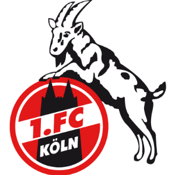

Deutsche Fußballvereine mit Tradition
Gegründet: 1895
Deutscher Meister: 1933
Gegründet: 1895 
Deutscher Meister: 1962, 1964, 1978
Gegründet: 1919
Deutscher Meister: 1923, 1928, 1960, 1979, 1982, 1983